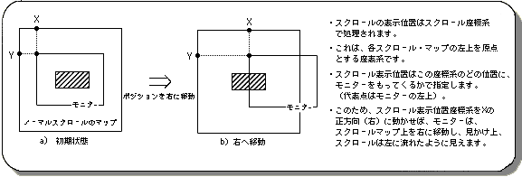
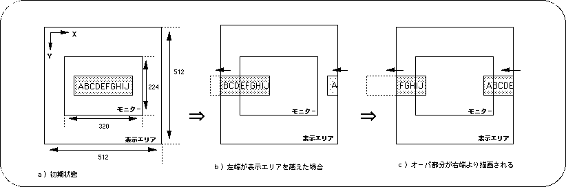
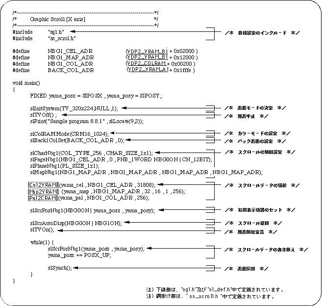
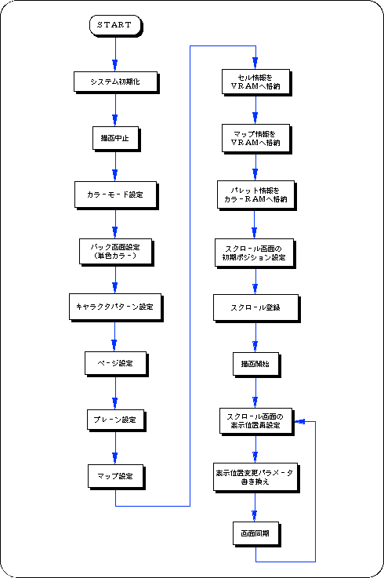
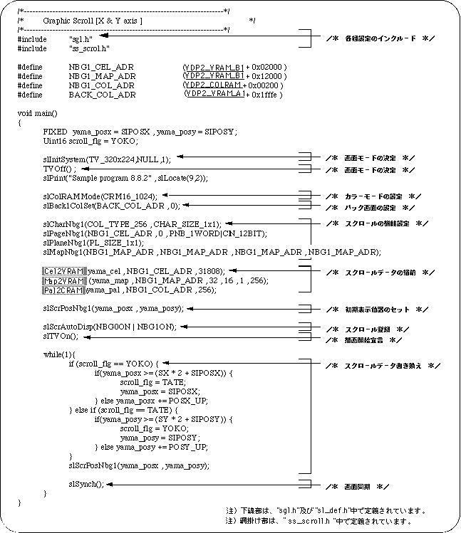
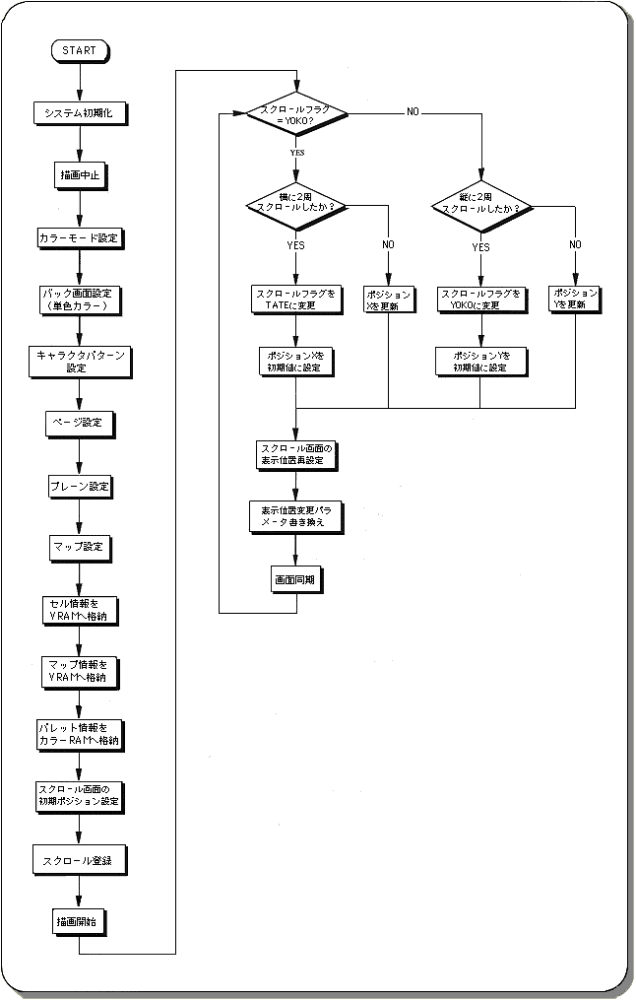

Return to previous page | Return to menu | Go to next page
The normal scroll screen “NBG0 to 3” can be scrolled vertically and horizontally and scaled (NBG0, NBG1 only). Here, we will explain these two functions together with a sample program.
The normal scroll screens “NBG0-3” can be moved vertically and horizontally by changing the scroll display position.
An image of this is shown below.

Use the library function “slScrPosNbg0 to 3” to move the scroll display position.
“SlScrPosNbg0-3” is also used to set the initial scroll position.
If the scroll display position moves up / down / left / right and the scroll exceeds the display area, the scroll starts drawing again from the opposite end.

The following two sample programs (Lists 8-2 and 8-3) implement scroll horizontal movement and vertical / horizontal movement using SGL library functions.



